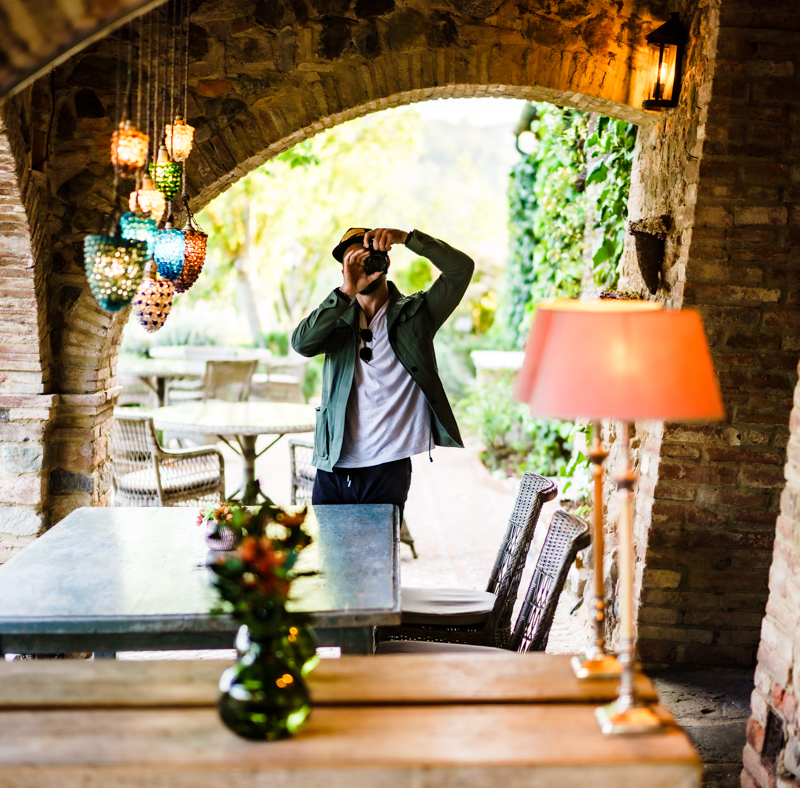

I am a Berkeley, CA based photo/videographer.
I am a former collegiate athlete (swimmer) who loves being as close to the
ocean as I am to the mountains. I love capturing and sharing the world as
I see it in my mind. In my work I focus on landscapes, portraits, flora
and textures, automotive, events, product, real estate, and more.
If you'd like to work together, send me a message!
Email: Danny@Camozzomedia.com - Or, click the email link at page bottom.
My Gear:
Cameras
Sony a7R3
Canon 6D
Lenses
Voigtlander 50mm f1.2 for Sony
- stays on my camera 90% of the time
Sony 70-200mm f2.8 GM
Sony 16-35 f2.8 GM
Sony 85mm f1.4 GM
Canon 35mm f2 IS USM
Canon 50mm 1.4 FD Mount
Canon FD to Sony NEX Mount Converter
Stabilization
DJI Ronin S
Sirui Tripod
Backpack
Wandrd Prvke (31L)
Accessories
Sony 128GB UHS-II SD Card
82mm Circular Polarizer
Godox TT685s Flash (Sony version)
Western Digital 4TB External Hard Drive
All content within this site is my own. I edit my work using Adobe
Lightroom, Photoshop, and Davinci Resolve.
As an Amazon Associate, I earn from qualifying purchases made through
affiliate links.